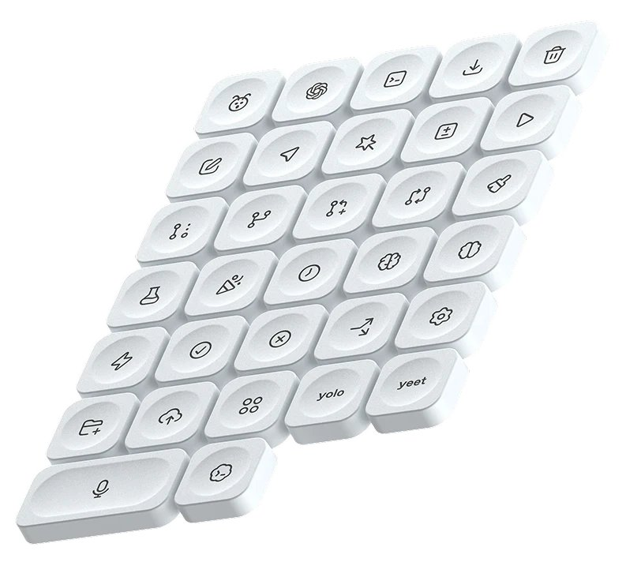

新闻 · 2026-11-28 12:00
“iPod 之父”法德尔：OpenAI 曾邀乔纳森 · 艾维打造实体 AI 设备，因为苹果永远不会提供数据
OpenAI 曾邀请苹果前设计主管乔纳森·艾维为其打造实体AI设备，因苹果拒绝开放iPhone数据，导致OpenAI无法获取情境信息。法德尔称，该设备将集成GPS、麦克风、摄像头等传感器，通过Wi-Fi或蓝牙连接手机，将数据传至云端AI处理。OpenAI希望将部分计算任务转移至终端设备，但苹果未开放资源。

来源与核验
单一信源报道，未交叉核实